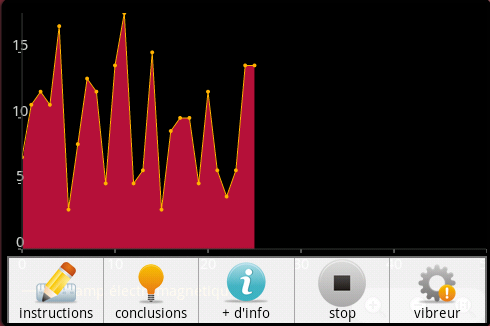
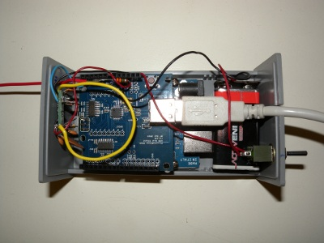
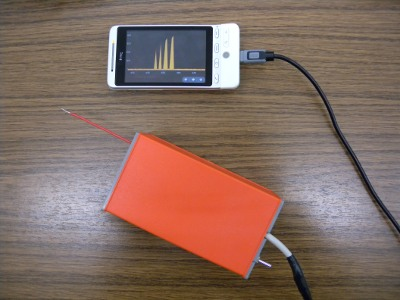

What is it all about?
We don't have the sensors to see or feel electromagnetic fields yet, they might have some impact on us (still an "under-research" topic, see WHO). Ondes Visibles! is an Android + Arduino application that helps people experimenting with and raising their awareness of electromagnetic fields (EMFs). It features tutorials giving you the very basics of EMFs as well as interactive experiments for low (LF) and high (HF) frequencies using home-made sensors.
Ondes Visibles! is a collaboration between the Cudrefin02 foundation and the Web of Things team and ETH Zurich.
How does it work?
We plug an LF and HF sensor to an Arduino board. Then, using a USB bridge, we communicate the measurements to an Android mobile phone through a USB wire and visualize the data in graphs.
I want to build it! Where do I start?
Software
You'll need the Arduino source code as well as the Android application. Both of them are open-source and available on GitHub.
To install it on an Android phone simply scan the QR below.
Note that the Android app and tutorials are currently available in German, French and English, if you would like to translate it or have a great interest in a translated version, drop us a mail.
Obviously, to run the app you'll also need an Android phone: we tested the software on the HTC Hero 1.5 and the Nexus One 2.36 but it should work on any 1.5+ but ideally no more than 4.2 (see this discussion!).

Hardware
You can build it yourself! You'll need: an Arduino (preferably Uno), a USB Host shield (preferably the one from Circuits@Home), a LT5534 RF Power Detector, a couple of cables and resistors.
Building the high-frequency sensor basically just requires a resistor and a rigid cable, there is a nice tutorial here.
Building the high-frequency sensor is slightly more complex and is probably the hardest part of the project as it requires solid soldering skills, but again, there are two nice tutorials with pictures and schematics to build this part: Arduino RF sensor project and Radio signal strength project.


Authors and Contributors
@domguinard and the @webofthings crew!